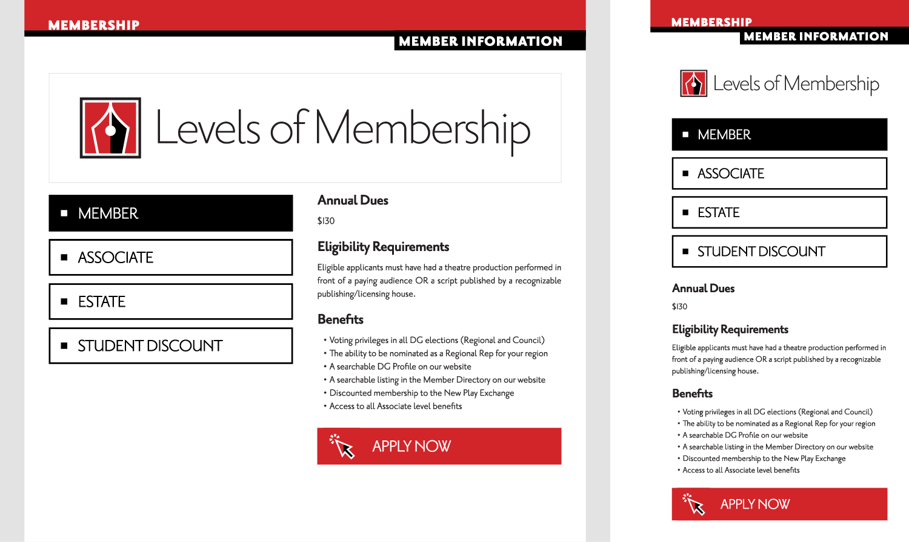
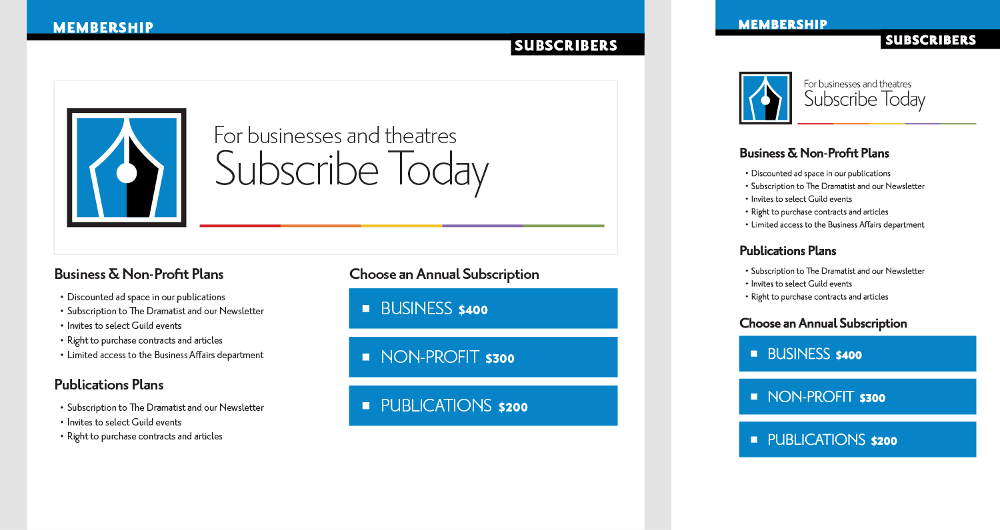
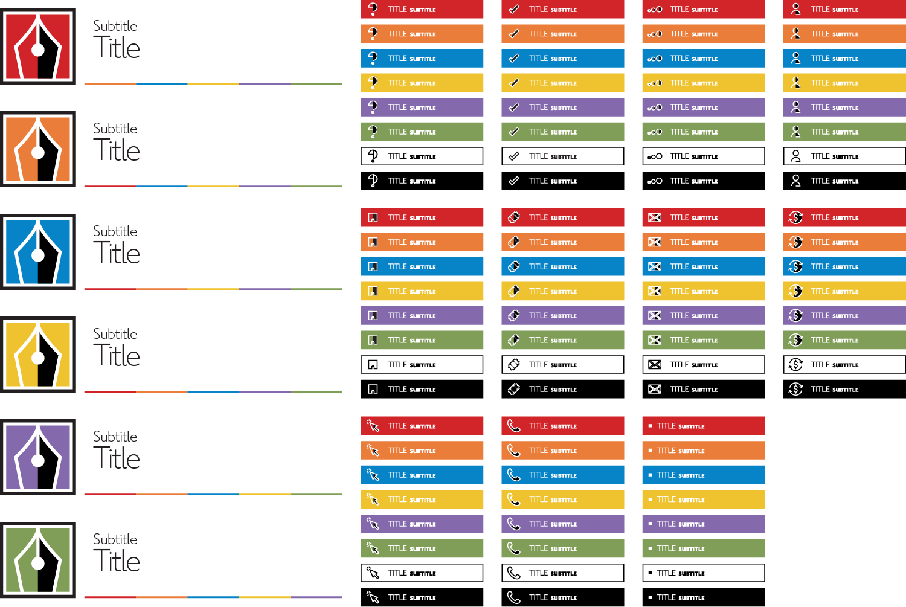

For over 100 years, The Dramatists Guild has advocated for theater writers in the United States. Since there is no union for theater writers (which is a long story in itself), the Guild functions as a paid membership service providing unlimited business advice, a network of regional representatives, and numerous other benefits including their own bi-monthly publication, The Dramatist. Even though the Guild functions like a union in many ways, its opt-in structure necessitates extensive marketing and incentivization for potential members.
I joined the Guild’s staff at a pivotal point—the company was in the process of designing the back- and front-end of a new website and membership database. Implementing this technology meant that the company's focus on user experience became a question of administrative details like subscription plans rather than website navigation or benefit discoverability. As the Membership & Creative Affairs intern, I researched the Guild's branding and history to expand on their aesthetic identity and improve user experience. During the summer of 2018, I designed several flagship webpages and an animated promotional video to premiere and showcase my contributions to the Guild’s design.
The Guild's graphic design is derivative of the company's publication, The Dramatist. Because this publication is a form of print media, many of its aesthetic choices do not make sense in the digital realm. This is especially true because the company's website features little flexibility for complex layouts because of the limitations of the preexisting code. The design across both physical and digital mediums almost exclusively uses typography, with little focus on imagery, geometry, or other elements. This works great in print since creatively laying out elements is as simple as putting them where you want them. Meanwhile, web design requires an understanding of screen sizes (i.e. responsive design), code structure, and navigability.
When I worked at the Guild, the website had no tools whatsoever to effectively incorporate this typographic flexibility. And, since the company was in the process of creating a new website, I had to make sure the company could easily migrate any new designs to the new back-end. Thus, my mission at the Guild was to expand on the company's aesthetic identity while working under these limitations.
Fig. 1. A two-page feature from The Dramatist. Credit to the Dramatists Guild.
To attract new members and make current members more comfortable with the website, I researched ways to make the Guild's design speak to its users. The Guild's mission is to advocate and provide personalized support for its audience my mission was to make this friendliness more apparent. While typography is excellent at conveying emotion and voice (see The Public), the inflexibility of the Guild's website meant I needed to find an alternate route.
To address this, I developed a design language that began with rounded iconography. The Guild's typography motivated me to pursue elements of "friendly" geometry, since the company's typeface (Priori) has numerous elements of gothic or grotesque inspiration. I tried to counterbalance this by implementing clean, curvy shapes that prominently feature color without requiring it.
Fig. 2. Experimenting with "DG" iconography.
Many elements of the Guild's marketing aesthetic are simplistic, especially in its use of type and color. Stylistic choices for text often resort to letting the typeface do its own thing without much alteration. Meanwhile, color adheres to a limited palette of unrelated hues that serve more as tertiary options to black and white. This system has its flaws, but I saw the potential for introducing motion graphics into the design language to better utilize its simplicity.
My primary project at the Guild was scripting, designing, and animating a promotional featurette to introduce motion into the company's design language. I used Adobe Illustrator and After Effects to animate vector graphics in ways that evoke various theater iconographies (e.g. the branding for the Dramatists Play Service), as well as make basic information about Guild membership more fun and accessible. The video features an original score and voice-over, but I designed it with the intention that the entire film must be legible without sound.
I was most excited about this project because it gave me the opportunity to expand the boundaries of the Guild's design instead of working within the limitations of the magazine and website. Motion design is more accessible, fun, and engaging than reading a website full of textual information. Furthermore, video is surprisingly easier to distribute than text because it becomes an encapsulation of a lot of information in one cohesive object. With the completion of this video, the Guild is now able to direct its current and potential members to a singular source that conveys all of the information about membership and autonomously engages its audience.
Fig. 3. Promotional video, "The Value of Membership".
My focus shifted to the website once I completed the video. I needed to create an interface for users to access the video and gain additional information about membership. This task ended up more complex than I expected, as the Guild’s website ranges over several distinct administrative areas (e.g. business affairs, news, Membership, etc.) with each featuring its own page hierarchy and layout. By introducing a new design on the membership pages, I was effectively spearheading a more unified layout for the entire website.
My objectives for designing these pages were twofold: make the website more visual and make these designs as easily implementable as possible. To do so, I utilized large graphic buttons and rewrote body text. I included only the necessary information for new and returning members in these pages. Because of the inflexible back-end, I was limited to a template that featured two columns and a header. I standardized the header graphic, as well as the functions of the left and right columns in terms of page navigation and informational content. The simplicity of these layouts and their adherence to the preexisting template meant that these pages functioned well with the current website and the new web developers could easily migrate the content to the new back-end when ready.
Fig. 4. The membership homepage, which hosts the promotional video.
Fig. 5. Example of a multi-page layout with a sidebar.
Fig. 6. Example of an alternate color scheme.
The large scope of my projects at the Guild conflicted with my limited time with the company, so I had to approach every project with future work in mind. I collaborated extensively with my coworkers, including Executive Director of Creative Affairs Tina Fallon, and boss, Director of Membership & User Experience Emmanuel Wilson, to solicit feedback on my work and iteratively improve each product. I took this approach because it allows the company to more readily fall in love with a design since they play a hand in designing it too. Hence, this builds a future for the design since the aesthetic becomes the company's voice. The Guild was not ready for the development of a style guide, but I left the company with graphic assets and guidelines on how to continue using my designs and iterate on them once ready.
(My experimentation with “DG” iconography is apparent particularly in the question mark icon—a “D” and backwards “G” compose the question mark’s top curve.)
Fig. 7. Reusable assets developed for future graphics.
Fig. 8. Various header and button templates.
Throughout all of my jobs, I have learned how difficult it is to improve a system that cannot stop running. The Guild’s work on a new website and membership database meant that staff and resources to maintain its current system were understandably limited. As an intern, my position was to assist in that regard and help ease the load of everyday responsibilities so that more work could happen on these new developments.
Nevertheless, much of my contributions to the Guild ended up shaping what was to come. This was not my initial intention—I only started working on significant projects once I found opportunities to improve the company’s website and design. This late change in focus meant I lost valuable time to communicate about new projects to my boss and the company’s web developers. Thus, my projects serve as examples for future designers and not as guidelines for such work.
Should I have had more time with the Guild, I would have liked to develop a concrete style guide to guide the company’s branding and identity. My summer work began this initiative, but the company’s responsibilities to simultaneously maintain and improve its systems left little room for an additional major project. I hope to work with the Guild again to continue this work, but I am happy with the progress I made during this internship. ◼


{kind=link}
{kind=link}
{kind=link}
{kind=link}
{kind=link}
{kind=link}
{kind=link}